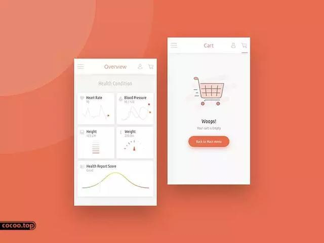
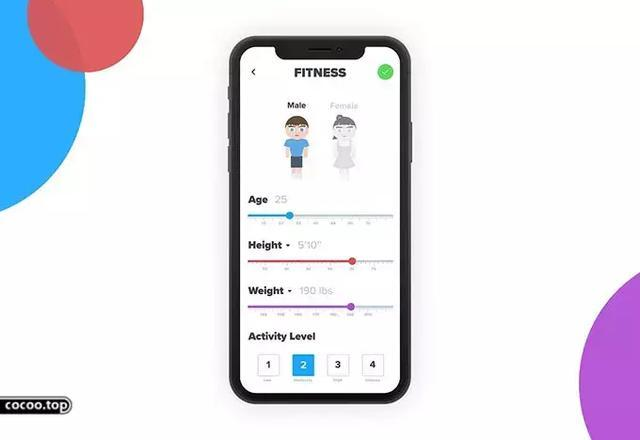
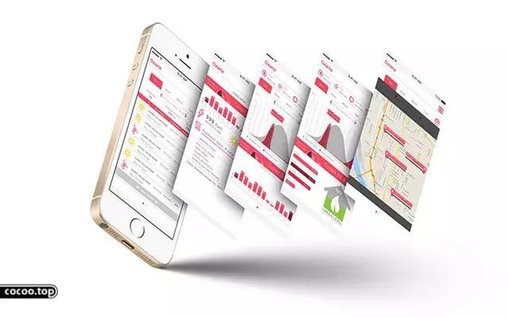

人性化
人性化指的是一种理念，具体体现在美观的同时能根据消费者的生活习惯，操作习惯，方便消费者，既能满足消费者的功能诉求，又能满足消费者的心理需求。因此，人性化UI界面就是在设计的过程中始终以用户作为设计的出发点和目的，不但要使用户尽可能简单、高效地与产品交互，同时还要满足用户的情感需求；甚至通过产品的使用，帮助使用者建立自我价值和自我认同的信念。
优化的软件系统结构
UI界面是软件系统的外在表现。UI界面的信息结构是软件系统在操作过程中所呈现的信息层次，通俗地讲就是软件系统的组织结构。它的任务就是在信息与使用者之间建立起一个通道，使用户能够按照这个通道便捷地获取到其所需要的信息，因此软件系统结构的优化是人性化UI界面设计的基础和必要前提。

一个人性化的软件结构系统，首先需要优化软件结构层级，通过减少界面信息结构层级和增加单层信息幅度，来构建一种“宽而扁”、“快而全”的信息组织形式，也就是通过适当增加同一层级目录以减少目录的总层级数量，以减少用户为实现某一功能操作的步骤数量，和提高用户的操作效率。但，此种方式应避免的问题的是：同一层级功能的增加可能会导致用户面对一个UI页面过多的功能而手足无措，不能迅速找出其想要的信息。这就要求对软件结构层级中的同级功能进行分类管理。

其次人性化的软件结构系统体现在各层级功能分类和分布上，一个人性化的UI软件结构中各功能模块间的关系要有逻辑性，分类要合理、清晰，命名要准确、易懂，不要使用过于专业的术语。

另外人性化的软件系统还应允许用户根据自身行为的频度和提高操作效率需要自我定制层级。如手机产品中的聊天工具和音乐播放等经常性使用的功能则需要允许操作者根据使用习惯放置在主界面中，而手电筒等不常使用的功能则需要被允许放置在另一个页面中，也就是可以让用户根据需要自我定制层级。

交互设计
交互一词最初源于比尔.莫格里奇，他把交互定义为产品使用行为，任务流程图和信息结构的设计，实现技术的可用，易于理解以及令人们使用得更加愉悦。任务流程图和信息结构的设计目的是把复杂的信息和页面经过精心组织清晰地展现给用户，易于用户理解，并在使用的过程获得愉悦的感受，因此任务流程图和信息结构决定了整个界面操作逻辑与页面关系，是交互设计中的关键。

界面上的每一个符号必须是能指与所指的紧密结合，让用户觉得这个东西应该是这样使用的，也就是要符合用户的心理预期；但是当我们的设计不是这样的时候，用户就会产生困扰和抱怨。那么什么样的跳转设计才是符合用户心理预期呢？人性化UI界面的应用功能以及操作界面设计尽量符合用户日常经验所衍生出的对于系统以及环境的印象，也就是在产品升级换代的时候尽量保持交互设计和上一代产品相一致，使用户即使面对新产品仍然是熟悉的操作环境，不至于感觉到陌生和困惑。

有些产品屏幕的显示空间有限，有可能会使软件的信息结构变得窄而深。为了实现某个功能，用户在操作过程中需要在多个界面之间跳转，这个时候就需要保证用户顺畅地操作，要能够快速地找到出口，并能够随时地返回上级操作菜单，这样会增加用户的安全感。

合理的页面布局
页面布局就是对界面的文字、图形或表格进行排布、规划、设计，是软件系统功能架构的外在可视化形式。页面布局显示了软件功能构架如何分解为不同功能集，以及功能集构件如何由跳转连接来产生有用的功能形式。因此，有效的布局对于用户快速找到想要的内容，以及提升用户的体验至关重要。布局方案不是唯一的，巧妙采用各种布局可以增强产品的易用性和交互体验。在产品设计过程中，需要考虑为不同的信息结构提供相匹配的布局。

合理规划利用界面空间的目的是保证用户阅读和操作时的准确性和高效率。因此，界面布局首先应当清晰明了地呈现界面上各元素之间的相互联系和重点，因为用户首先关注的区域是界面的视觉焦点，形式上被赋予焦点属性的UI元素一定要表达最重要的内容。其次要根据用户的阅读习惯来设计布局，也就是尊重大部分人从左向右，自上而下的阅读习惯。其次要求在用户阅读时关键数据不会被中断，而且要求一个任务尽量在同一个界面内完成；同时要求界面上逻辑上相关的元素在空间上被分隔开来，且没有明显的视觉关联，以避免误操作的发生，如确认按钮和放弃按钮。
图形界面
色彩和图标是图形界面的两大主要的构成元素，因此人性化UI界面设计还体现为色彩和图标等的人性化要求。
色彩通过视觉冲击，影响于人们的感官，直接左右人们的感情与行动。不同的色彩让人产生不同的心理感受，反之不同的心理状态所能接受的色彩也是不尽相同的。
人性化UI界面的色彩设计首先是用户可以根据自己的需要改变系统的默认设置，选择一种自己满意的个性化的色彩设置来实现的。人性化UI界面借助色彩的使用和变换，目的就是用色彩的变换来协调用户的心理，满足使用者生理、心理、情感的需求，影响其情感与行动。
界面的图标按钮是软件功能的命令集，每一个图标对应的是一个目标动作，因此作为体现目标动作的图标，是具有典型特征的图形符号，它应该有强烈的表意性，能形象地反映界面的功能信息，快速准确告诉用户该图标是做什么用。系统的信息结构隐藏在界面之下，界面图标设计需要让用户预知操作的后果，引导性的界面图标能让用户对系统做出准确的把握。